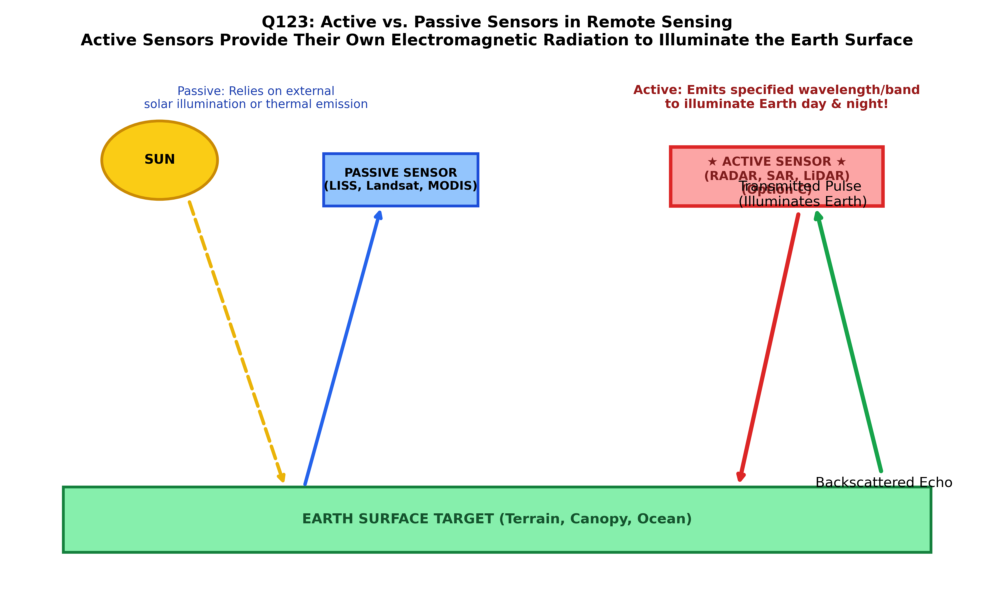

All remote sensing systems detect and record electromagnetic radiation (EMR) to extract information about Earth surface features. Based fundamentally on the origin of the illuminating electromagnetic radiation, sensors are categorized into two primary classes (Lillesand & Kiefer; Sabins):
| System Category | Illumination Source | Operational Spectrum | Day/Night & Weather Capability | Prominent Examples |
|---|---|---|---|---|
| ACTIVE SENSORS (Option C) | Internal Artificial Source: The sensor generates and emits its own electromagnetic pulse of known wavelength, power, and polarization to illuminate terrain. | Microwave (Radar: $1\text{ mm}$ to $1\text{ m}$), Optical/Near-IR (LiDAR: $532\text{ nm}, 1064\text{ nm}$), Acoustic (Sonar in water). | All-Weather, Day and Night: Operates completely independently of solar illumination; cloud-penetrating in microwave bands. | Synthetic Aperture Radar (SAR: Sentinel-1, RISAT), LiDAR (GEDI, ICESat-2), Radar Altimeters, Scatterometers. |
| PASSIVE SENSORS (Option B) | Natural External Source: Detects naturally reflected solar radiation or naturally emitted thermal blackbody radiation from the terrain. | Visible, Near-Infrared (VNIR: $0.4\text{--}1.0\text{ }\mu\text{m}$), Shortwave Infrared (SWIR: $1.0\text{--}2.5\text{ }\mu\text{m}$), Thermal Infrared (TIR: $8\text{--}14\text{ }\mu\text{m}$). | Solar Dependent: VNIR/SWIR requires daylight and clear skies (blocked by clouds). TIR operates day and night but cannot penetrate clouds. | Landsat OLI/TIRS, Sentinel-2 MSI, IRS LISS-III/IV, MODIS, Radiometers. |

By formal scientific definition, any instrument that "provides electromagnetic radiation of specified wavelength or a band of wavelengths to illuminate the Earth surface" and then records the scattered backsignal is universally designated as an Active Sensor (Option C).
Active sensors house a dedicated transmitter that generates controlled electromagnetic energy (e.g., radar magnetrons/klystrons or pulsed laser diodes). Because they self-illuminate the target, they control the exact wavelength, phase, pulse duration, and polarization of the incident wave, allowing precise measurement of two-way travel time and backscattering cross-section.
Passive sensors do not provide their own illuminating radiation. They rely entirely on external ambient radiation (such as reflected sunlight or self-emitted thermal photons from the target). Examples include standard photographic cameras, radiometers, and multispectral scanners.
Microwave sensors describe the wavelength band ($1\text{ mm}$ to $1\text{ m}$), not the illumination mechanism. Crucially, microwave sensors can be either active (e.g., RADAR, scatterometer) or passive (e.g., microwave radiometer measuring natural thermal microwave emissions). It is therefore not the defining term for self-illuminating systems.
Optical sensors operate across the optical domain ($0.3\text{--}14\text{ }\mu\text{m}$). While most optical sensors are passive (multispectral scanners), LiDAR is an active optical sensor. "Optical" describes spectral wavelength range, whereas the question asks for the operational illumination mechanism.
| Remote Sensing Instrument | Sensor Class | Operating Wavelength | Measured Parameter | Geological / Environmental Role |
|---|---|---|---|---|
| Synthetic Aperture Radar (SAR) | Active | Microwave (C, L, X band) | Backscatter amplitude & phase | Structural geology, fault slip, surface roughness, soil moisture |
| Light Detection and Ranging (LiDAR) | Active | Optical / NIR ($1064\text{ nm}$) | Two-way laser travel time | Canopy-penetrating high-resolution Digital Terrain Models (DTMs) |
| Radar Altimeter | Active | Microwave ($13.5\text{ GHz}$) | Satellite-to-surface distance | Ocean surface topography, ice sheet elevation |
| Multispectral Scanner (e.g. Landsat OLI) | Passive | VNIR & SWIR ($0.4\text{--}2.3\text{ }\mu\text{m}$) | Reflected solar spectral radiance | Lithological mapping, mineral alteration, vegetation health |
| Thermal Radiometer (e.g. Landsat TIRS) | Passive | Thermal IR ($10.5\text{--}12.5\text{ }\mu\text{m}$) | Emitted blackbody radiance | Land surface temperature, volcanic geothermal anomalies |
| Passive Microwave Radiometer (e.g. AMSR-2) | Passive | Microwave ($6.9\text{--}89\text{ GHz}$) | Natural microwave brightness temp | Sea ice extent, global atmospheric water vapor |